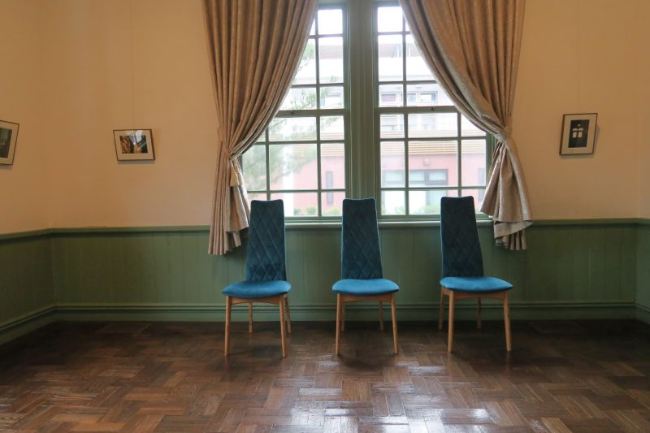
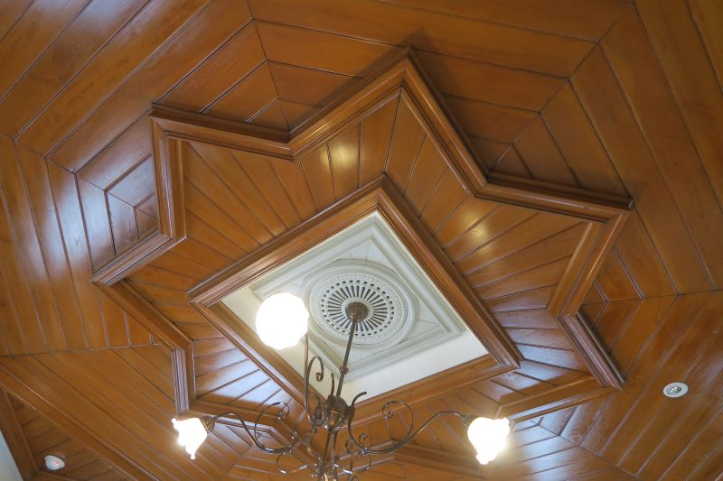
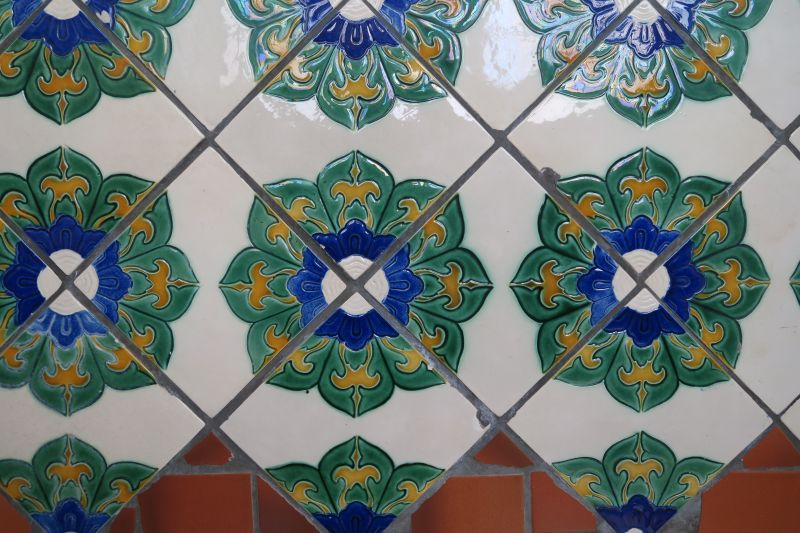
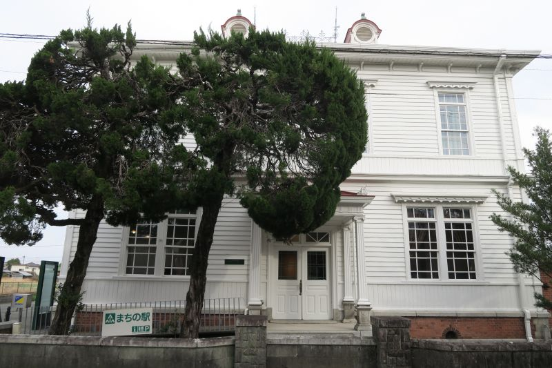
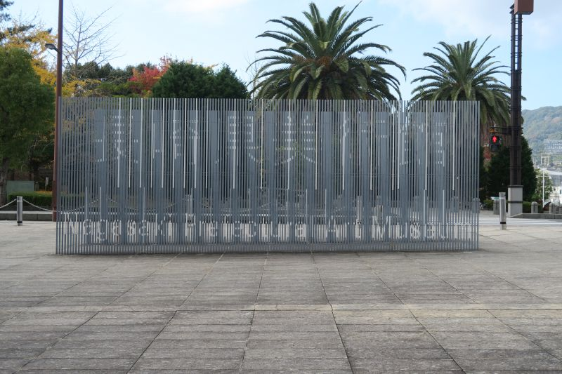
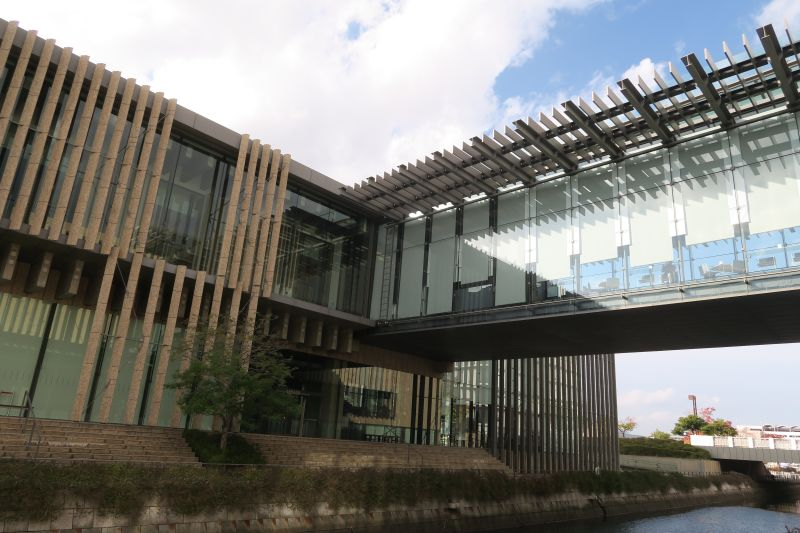
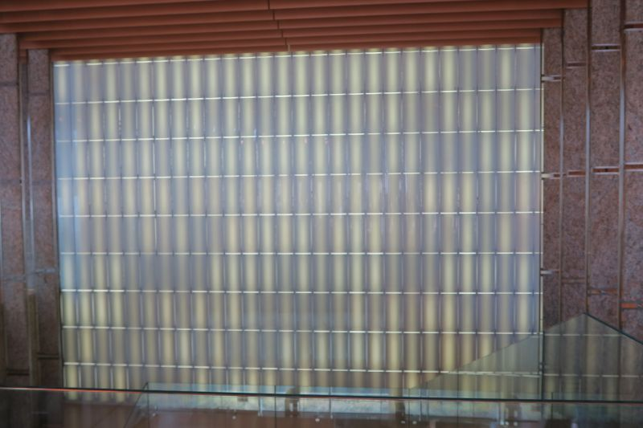
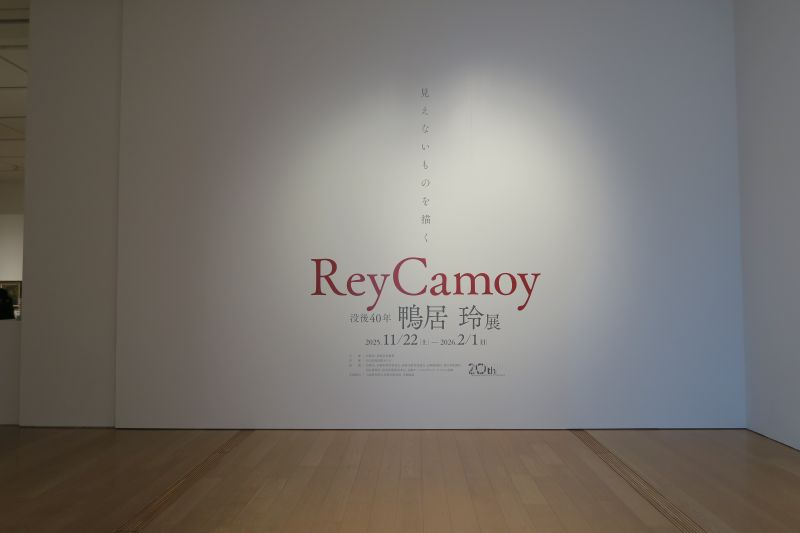
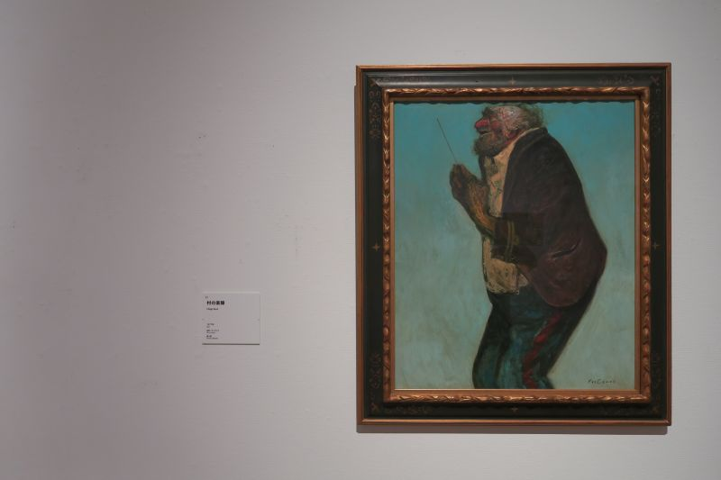

大川市立清力美術館
福岡県大川市大字酒見256番地1
清力酒造株式会社の事務所として1908年に建築された、洋風と和風が共存する建物。
ヨーロッパ古典建築様式の彫刻装飾やカーテンボックス、シャンデリア、家具調度品、
100年前のタイルなどを当時のまま見ることができる。
現在は大川市が管理し、大川市指定文化財と福岡県文化財に指定されている。
| 開館 | 1986年 |
|---|---|
| 施工 | 大工棟梁 筬島傳太郎 |
| Web site | https://www.city.okawa.lg.jp/050/050/030/ |









